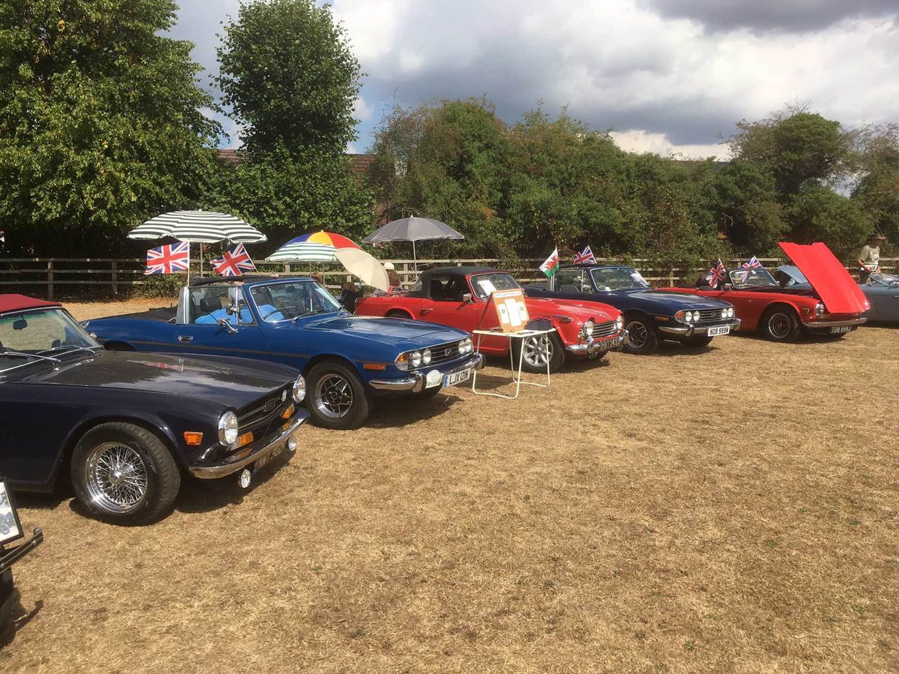
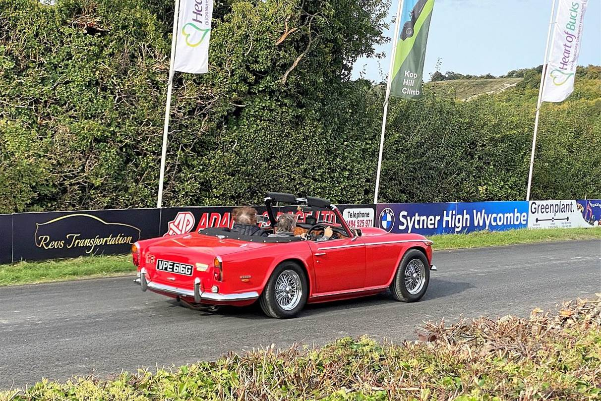

Hi Everyone,
Because there is not much happening at the moment, we thought it would be good to have a round up of last year's events - just to remind you of the days when it was too hot to go out with the top down ! And to get you looking forward to this year.
2022 got off to a flying start with Drive it Day, when 13 cars took a scenic run through the Berkshire and Wiltshire countryside to Bowood House. We were given our own parking area, from where we walked round the beautiful gardens before having a picnic lunch in the grounds. On the way back we stopped at the Dundas Arms, Kintbury for afternoon tea alongside the Kennet & Avon Canal. This reminded us how the KVG logo came about, with its image of a TR towing a barge along the canal! Thanks to Val & Den, Mike & Sally, and John & Jackie for organising this. The 2023 run is to the Haynes Museum Yeovil.
The splendid Bowood House was the destination for our Drive it Day
A new event for us later in the month was a Dyno Shoot Out, organised by Phil D, where members could see just how many horses remained under their cars' bonnets compared to what they should have had originally. 12 cars submitted themselves to the rolling road, including eight TRs and four moderns. Of the Triumphs present, Phil Horsley's Grinnall aced it on the day with 253 bhp, albeit 32 bhp down on the original Grinnall specification. Of the chassis TRs present, Richard O's TR3 took pole, with an impressive 154bhp, 54 more than it left the factory with. Ian R's TR3 was only just behind, with an impressive 148bhp compared to an original 95bhp, even though it had a significant misfire on the day. Of the moderns, Phil D's BMW 335 took the prize, and overall top shot, with a rubber burning 326bhp, 31bhp more than it left Munich with. We are repeating this in 2023, so get the Colortune out.
The moment of truth - the Dyno cannot lie
A regular monthly event for KVG members is now the last Saturday of the month meet at the Cottage Inn, Upper Bucklebury, where classic car and their owners gather for lunch, coffee, or just to chat. In April, 36 cars attended, 10 of which were KVG members, with several others coming in their day cars. A fantastic way to spend a morning nattering to like-minded folk. Put it in your diary, but check at classicsaturdays.co.uk for up-to-date info on this and other weekend meets in the area.
KVG secured a front row position, and we had half a dozen cars, for the last show of the year, right in the middle of our patch. The show has a relaxed view on entry and exit times, so you can come and go as you please, making it ideal for a quick Saturday outing.
The Cottage Inn, Upper Bucklebury is a popular lunchtime meet on the last Saturday of the month
Dream on Gerry! This stunning GT40 was just one of the cars at the Cottage Inn
Another popular local event is the evening meet at the Six Bells, Warborough on the second Tuesday of the month. This has been going for years, but has really taken off after Covid, and we counted cars spread round the village green. Some really unusual models come out of their cosseted garages, and these included a Ferrari that we immediately recognised, but couldn't quite believe what it was. A quick check with the DVLA and the Ferrari register confirmed it was a 250 GT California Spyder. One of the most sought after models from the legendary Italian marque, only 55 were built, and the last one changed hands in the UK for £17m. And there it was sitting under the trees, getting scarcely a second glance. Fans of the 1980s film Ferris Bueller's Day Off will know what I am talking about.

£17m and counting. A Ferrari 250GT California Spyder under the trees at the Six Bells, Warborough i>
Slightly less glamourous, but probably just as rare, a Triumph Dolemite Sprint Rally car
On Sunday May 8th, KVG members travelled to the Basingstoke Festival of Transport, one of our regular diary dates. With over 800 classic vehicles on show, from bikes to the largest military and commercials, it is an excellent event, with dozens of stalls. KVG had a large stand with the club gazebo in place for shelter, sail banners announcing our presence and members' TRs and Stags proudly showing off in the sunshine.
June got off to a great start with the Pangbourne College Car Show. A special feature of this event is that they group cars by make and year, so all Triumphs were together, and made a splendid display. KVG had nine cars, including Stags and TRs, plus a classic 80s Raleigh Chopper bike brought along by Chris to complement his beautiful TR6. A fly-past by the last remaining flying Lancaster rounded off a greatday.
Triumphs of all models and ages at the Pangbourne College Classic Car Show
The Battle of Britain Memorial Flight Lancaster graced us with a flypast. Thanks to Mike F for this great shot
Next up in June was the Woodley Carnival. This is a major event in Reading, and always features a display of classic cars. Again KVG was well represented, and we all enjoyed a relaxing afternoon. That is until the nearby WW2 Rolls Royce Merlin started up, on the hour, every hour. No matter how many ccs or decibels your pride and joy generates, nothing was a match for a 27 litre V12 at full chat. The sound of the exhaust was matched only by the roar of the Avgas rushing through the giant carburettor. Thanks to Gerry & Moreen for organising this.
Under the trees at Woodley
17 litres of Rolls RoyceV12 ready to roar
At the end of the month, 13 KVG cars enjoyed a splendid week in Wales. Breakdowns, pre-trip prangs, and a shameful performance from a supposedly expert local classic car restorer meant we had a motley grid, including TRs, Stags, a couple of Jags, MX5 and Honda S2000, and a Moggie Minor Traveller. But this did not blunt the enjoyment of the splendidly smooth and empty Welsh roads, and the stunning scenery. The high point was a visit to Portmeirion. This Italianate village clinging to the waters edge overlooking Snowdonia was the setting for the cult TV series The Prisoner, as those of a certain age will remember. By prior arrangement we were allowed to drive our cars through the village, and photograph them in the centre, with a backdrop of the brightly coloured cottages and buildings. Brilliant, and something to remember always.
Parked up but not imprisoned in the centre of Portmeirion
Next up was the deferred KVG 50th Anniversary event. Instead of a day on a river steamer, which was proving too complicated to organise, 15 cars enjoyed a scenic drive through the Buckinghamshire countryside, including a spectacular view over the Chilterns escarpment, before ending up at the Upper Thames Motor Yacht Club, courtesy of a KVG boat-owning member, for a barbecue and boat trips. It was a superbly sunny day in an idyllic Thameside location, with two boats available for those who wanted a short cruise to Caversham and back. One was a luxurious Thames cruiser, and the other an environmentally-friendly electric launch. Thanks to Mike & Sally and Emrhys & Linda, and Duncan slaving over the hot coals.
A rare cloudy moment on an otherwise sweltering hot day beside the Thames
Luxury afloat, with your own skipper to take care of the navigation
The 29th Newbury Blood Cancer Show, held at Newbury Racecourse in August was a stunner. Lovely location, fabulous weather and a wonderful mix of KVG vehicles including a recently acquired 1886 Benz Motorwagen replica. One litre, 400rpm, and half a horsepower, but the forerunner of every motor vehicle ever since. More modern KVG Triumphs were well represented including Duncan's new TR6, replacing his previous car, sadly written off by the insurers. Also, a lovely original TR8 which has been in long-term ownership.
Something completely different - 1886 Benz Motorwagen, the world's first motor car
KVG cars bask in the August heat
A superbly finished TR6, sporting MX5 seats for extra safety and comfort
The engine-bay of a genuine factory TR8
Shalbourne Classic Car Show followed, with another excellent mix of vehicles. Proud though we are of our TR's, it is nice to see a good mix of marques. Shalbourne is very much a local show but has a strong following and KVG was very well represented.
The Brill Classic Car show is part of the Brill Annual Festival, and I this was the first year KVG have attended Cars gathered at Goring prior to heading off in convoy through the Oxfordshire and Buckinghamshire countryside. Fabulous weather and stunning scenery provided an excellent start to the day. There were over 350 classic cars of every marque perched on the playing field, with panoramic views over the surrounding countryside. The event was totally for many people is the ideal arrangement.
The Binfield Heath Fete is another local show that we attend, where our cars always attract attention from the visitors.
Another scorcher at Binfield Heath
The highlight of September was the annual Kop Hill Festival. This two-day event attracts cars of every age, size, shape and sound, together with stalls and entertainment of all sorts. The original Kop Hill was a hill climb event from the 1930s up a challenging stretch of road up the Princes Risborough escarpment, and every year this is closed for two days to allow any car to tackle its gradient and curve, though these days you are definitely not meant to treat it as a race. Having said that there was still a lot of rubber left on the tarmac at the start line, and waiting for the flag to drop in front of a grandstand of cheering onlookers, the red mist still came down, even a 1970s Stag!
The Chilterns TR Group make this their annual special event, and lay on an all-day food tent, with breakfast, lunch and afternoon tea, plus an impressive display of 20 or more Triumphs. Our thanks to them for their organisation and hospitality. Take a look at the KVG Facebook page to get a flavour of the event.
Burning rubber up Kop Hill
One of the many rare and unusual cars at Kop Hill - it may well have competed here in the heyday of the climb
A couple of weeks later it was the October Thatcham Car Show. This has grown from its early days on a patch of grass by the size of the A4, and now takes place on the Memorial Playing Field, giving plenty of room to spread out. Not quite up to Kop Hill, but there was still a good number of cars of all types. KVG secured a front row position, and we had half a dozen cars. Including a genuine TR8, with full American export spec, including automatic gearbox, power steering, and early Lucas electronic fuel injection, but one of only a tiny number made with RHD. It even has air-con - appropriate for cars most of who were destined for California, but something Triumph probably did not think at the time would be a necessary extra for the UK! This engine went on to power two generations of Range Rovers and Discovery, but sadly very few Triumphs, as it came at the end of sports car production from Solihull.
KVG cars at Thatcham
A new event is the monthly Sunday morning breakfast meet at the Wheelwrights Arms, Woodley. This is organised by the Barkham & District Classic Car Club, and has been gathering support over recent months, with more than 20 cars present, ranging from humble 1960s British saloons, through modern Aston Martins, up to a fire-breathing US race-spec stock-car. Running on a mixture of Avgas and Tesco Premium, this lit up the sky and blew out the ear-drums of anyone close by.
Coming Up:
April 10th - Newbury Spring Vehicle Meet
April 23rd - Drive it Day, Haynes Museum